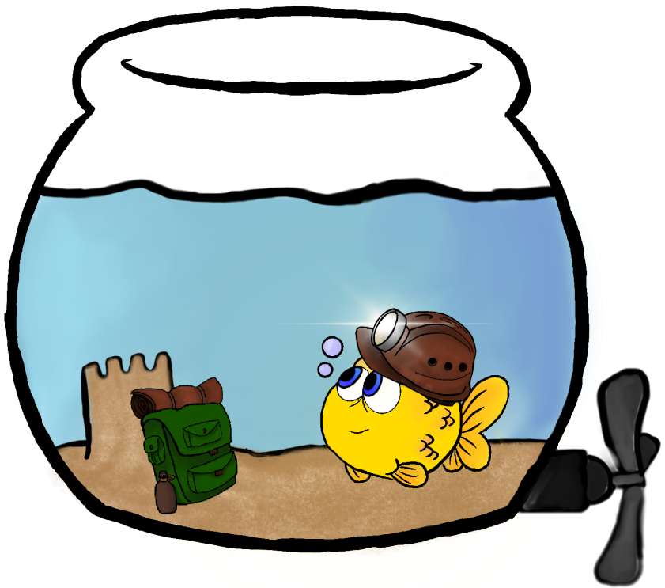

De sier at denne byen var en gang politisk og forrettnings senter. Lurer på om det finnes skatt
her!! hmm...

Jeg har vært i 131 meters dybde under vann og omgitt av fisk og andre
sjødyr i
61 år. I 1959 måtte Shi Cheng vannkraft bygges, noe som også betydde at det var nødvendig med en
menneskeskapt demning.